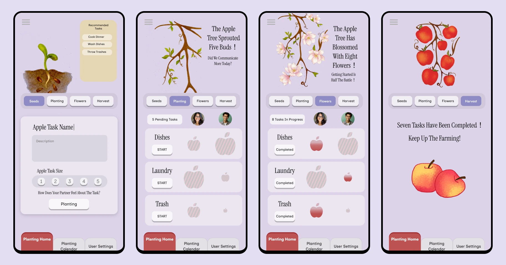

- 1 快速浏览：页首摘要Quick scan: the summary above
- 2 核心故事：正文Core story: the main text
- 3 深入查看：折叠的方法、数据与理论Deep dive: folded methods, data and theory
01看不见的家务劳动Invisible household labour
家务中的认知劳动是看不见的，所以设计问题是如何让它变得可以谈论。Cognitive household labour is invisible, so the design question is how to make it discussable.
家务中的认知劳动是心智负担中涉及规划任务、预判需求和分配责任的那一部分。它不是一件看得见的家务，所以很容易被忽略。项目要问的是：设计能怎样帮助情侣把它摆到台面上。Cognitive household labour is the part of mental load that involves planning tasks, anticipating needs and delegating responsibilities. It is easy to miss because it is not an observable chore. The project asked how a design might help couples bring it into the open.
决定要设计什么：产品应该记录家务，还是让家务背后的付出变得可见、可以讨论？下面的访谈主题指向后者。Choosing what to design: should the product track chores, or make the effort behind them visible and discussable? The interview themes below point to the second.
02我的部分My part
团队中的研究与行为理论。The research and the behavioural theory, within a team.
我负责Mine
- 访谈归纳与数据分析Interview synthesis and data analysis
- 行为分析：以 COM-B 问题分析和自我决定理论作为设计的理论基础Behavioural analysis: COM-B problem analysis and Self-Determination Theory as the theoretical basis for the design
团队负责Team
- Orchard 应用本身：产品概念、视觉设计与 Figma 原型由团队共同完成The Orchard app itself: product concept, visual design and the Figma prototype were built by the team
03三个访谈主题，各自对应一个原型功能Three interview themes each trace to a prototype function
六次访谈归纳出三个主题。每个主题都从参与者所说的话出发，经由解释它的行为理论，落到团队在原型中做出的功能。引语来自项目稿，仅标注参与者编号。Three themes came out of six interviews. Each one runs from what participants said, through the behavioural theory that explains it, to a function the team built into the prototype. Quotations come from the project deck and carry participant numbers only.

主题 1 · 任务是不可见的Theme 1 · Tasks are invisible
家务由一方私下管理，另一方没有看得见的切入口。Household tasks are managed privately, so the other partner has no visible access point.
COM-B 中的“机会”：任务由一方私下管理（心里记着、自己设提醒），让另一方没有看得见的切入口。自我决定理论：自主性。COM-B opportunity: tasks are managed privately (mental notes, personal reminders), giving the other partner no visible access point. Self-Determination Theory: autonomy.
让家务与贡献可见：一项任务依次经过种子、种植、开花、收获，并支持便捷分配和共享计划。Visualise chores and contributions: a task grows through Seed, Planting, Flower and Harvest, with easy assignment and shared plans.
- 1阶段标签：同一项任务依次经过种子、种植、开花与收获。1Stage tabs: one task moves from Seeds to Planting, Flowers and Harvest.
- 2共享清单，同时显示双方伴侣与各项任务。2A shared list showing both partners and each task.
主题 2 · 开口求助也会增加负担Theme 2 · Asking for help adds to the load
开口求助本身就是额外的心智负担。Asking for help is itself extra mental load.
自我决定理论：关系性。COM-B 中的“动机”：如果总是由一方包揽，另一方就缺少参与的理由。Self-Determination Theory: relatedness. COM-B motivation: if one partner always takes over, the other has little reason to engage.
轻量沟通与反馈闭环：开始一项任务时，提示用户自我鼓励；伴侣开始任务时，提醒你去称赞对方。Light communication and a feedback loop: nudges prompt self-encouragement when you start a task and a reminder to praise your partner when they start.
- 3任务进行中的提示：“Did We Communicate More Today?”3A prompt while tasks are planted: “Did We Communicate More Today?”
- 4任务开始后的鼓励语：“Getting Started Is Half The Battle!”4An encouraging message once tasks are under way: “Getting Started Is Half The Battle!”
- 5任务完成时的庆祝：“Seven Tasks Have Been Completed! Keep Up The Farming!”5A celebration when tasks are done: “Seven Tasks Have Been Completed! Keep Up The Farming!”
主题 3 · 伴侣对任务难度的感受不同Theme 3 · Partners perceive task difficulty differently
同一件事，伴侣看到的付出并不一样。Partners do not see the same effort in the same task.
COM-B：对付出的认知不一致，可能导致怨气或疏离。自我决定理论：关系性。COM-B: mismatched perceptions of effort can lead to resentment or withdrawal. Self-Determination Theory: relatedness.
让不同的难度感受可见：每项任务按 1–5 给难度评分，以苹果的大小呈现。Visualise different difficulty perceptions: each task is rated for difficulty (1–5), shown as apple size.
- 6为每项任务的负担打 1 至 5 分，问题为 “How Does Your Partner Feel About The Task?”6Rate each task’s size from 1 to 5, with the question “How Does Your Partner Feel About The Task?”
- 7同一任务下，双方各自的苹果大小可以不同。7Each partner’s apple for the same task can differ in size.
04原型The prototype
把每位伴侣的付出呈现为一项慢慢长成苹果的任务。It shows each partner’s effort as a task growing into an apple.
一项共同任务会经历四个阶段，这样每个人的贡献无需开口询问就能看到：种子（规划任务并给难度评分，1–5）→ 种植（开始任务；长出嫩芽）→ 开花（进行中；苹果变实）→ 收获（任务完成）。内置的提示会在你开始时鼓励自己，在伴侣开始时提醒你去称赞对方；日历按日、周、月或年展示已收获的任务。A shared task grows through four stages, so each partner’s contribution is visible without asking: Seed (plan the task and rate its difficulty, 1–5) → Planting (start the task; sprouts grow) → Flower (in progress; the apple turns solid) → Harvest (task done). Built-in nudges prompt self-encouragement when you start and a reminder to praise your partner when they start; a calendar shows harvested tasks by day, week, month or year.
05概念反馈Concept feedback
它促使团队新增了一个功能；效果尚未验证。It led the team to add one feature; its effect is untested.
原型初具雏形后，我们向参与者展示了设计框架及其背后的思路，了解他们对这个概念的反应。这是概念阶段的交谈，不是可用性测试。下面概括了参与者说的内容。Once the prototype took shape, participants were shown the design framework and the thinking behind it, to hear how the concept landed. This was a concept-stage conversation, not a usability test. The points below summarise what participants said.
| 参与者的看法（概括）What participants said (summary) | 与设计的关联Where it connects to the design |
|---|---|
| 他们喜欢苹果这个比喻，以及它对进展的视觉表达。They liked the apple metaphor and its visual expression of progress. | “种子 → 种植 → 开花 → 收获”的成长阶段，以及用苹果大小表示的难度评分。The Seed → Planting → Flower → Harvest growth stages and the apple-size difficulty rating. |
| 他们希望能支持伴侣之间低成本的沟通。They asked for support for low-cost communication between partners. | 这与“开口求助会增加负担”这一主题相呼应。团队因此增加了一种低成本、表情包式的方式来传递鼓励与支持（见下）。Relates to the theme that asking for help adds to the load. The team responded by adding a low-cost, meme-style way to send encouragement and support (see below). |
一处设计改动One design change
- 反馈：伴侣之间需要低成本的沟通。Feedback: a need for low-cost communication between partners.
- 团队的回应：在原型中加入了表情包式的鼓励与支持表达。Team response: a meme-style expression of encouragement and support was added to the prototype.
这一改动由团队作出。它是否改变了情侣沟通或分担任务的方式，还没有经过测试，所以这是一项设计回应，而不是经过验证的效果。The team made this change. Whether it changes how couples communicate or share tasks has not been tested, so it is a design response, not a validated effect.
06目前的进展Where it stands
一个有早期反馈的原型，而非经过验证的产品。A prototype with early feedback, not a validated product.
一个可运行的原型，随后进行了概念与原型阶段的评议，向参与者展示了设计框架与依据。访谈为设计提供了清晰的依据；这个应用在情侣日常使用中的表现，是接下来要了解的内容。A working prototype, followed by a concept and prototype-stage review in which participants were shown the design framework and rationale. The interviews gave the design a clear rationale; how the app behaves in couples’ everyday use is the next thing to learn.
下一轮与情侣一起研究的问题Questions for a next round with couples
- 情侣在最初几周之后还会继续使用吗？Do couples keep using it after the first weeks?
- 它是否让谈论任务变得更容易？Does it make conversations about tasks easier?
- 伴侣是否觉得付出的分配更公平了？Do partners see the split of effort as fairer?
- 要追踪哪些信号：任务创建与完成、贡献平衡、每周活跃的情侣数Which signals to track: task creation and completion, contribution balance, weekly active couples
07研究设计详情Research design in detail
深入查看Deep dive方法、样本与分析Method, sample and analysis
| 项目Element | 说明Detail |
|---|---|
| 方法Method | 对六位参与者做半结构化的利益相关者洞察访谈，了解亲密关系中任务是如何分担和协调的。Semi-structured stakeholder insight interviews with six participants about how tasks are shared and coordinated in close relationships. |
| 为什么用访谈Why interviews | 这个问题涉及不可见的、私下的协调，很难直接观察，所以需要第一手的叙述来找出背后的机制。The question concerned invisible, private coordination, which is hard to observe directly, so first-hand accounts were needed to find the mechanisms. |
| 参与者Participants | 六人，都曾与伴侣同居，同居时间不足三年。Six people, all of whom had lived with a partner, for less than three years. |
| 分析Analysis | 主题归纳；对目标行为（同居情侣之间认知性家务负担不平衡）做 COM-B 问题分析；以自我决定理论作为第二个视角。Thematic synthesis; COM-B problem analysis of the target behaviour (imbalanced cognitive household load between cohabiting couples); Self-Determination Theory as a second lens. |
| 对标产品Comparators | 对现有的任务与日历工具做了对标（例如 TickTick 和 TimeTree）。Existing task and calendar tools were benchmarked (for example TickTick and TimeTree). |
| 招募Recruitment | 自愿参与。Voluntary participation. |
| 规模Scale | 六位参与者，用来找出问题背后的机制并塑造概念。引语用于说明主题。Six participants, used to find the mechanisms behind the problem and shape the concept. Quotations illustrate themes. |